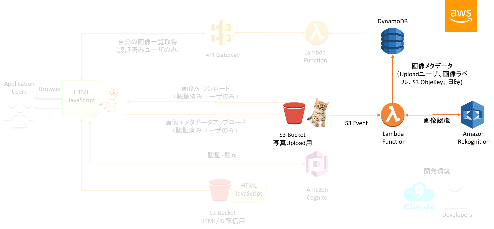
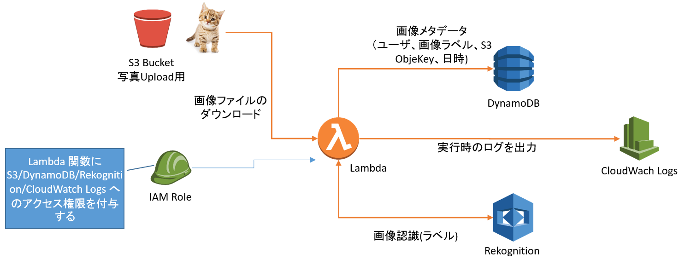
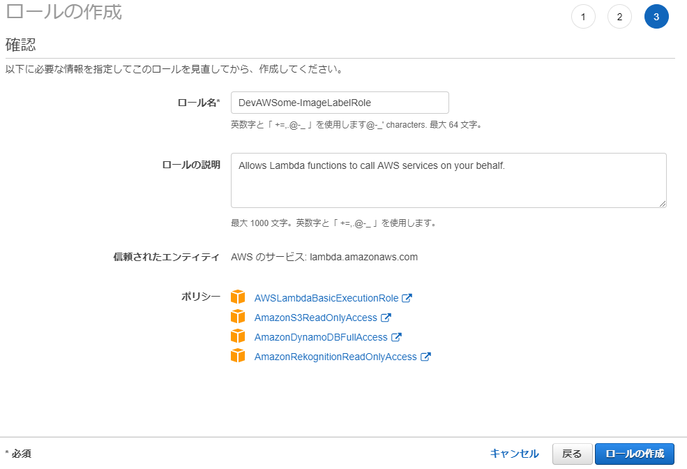
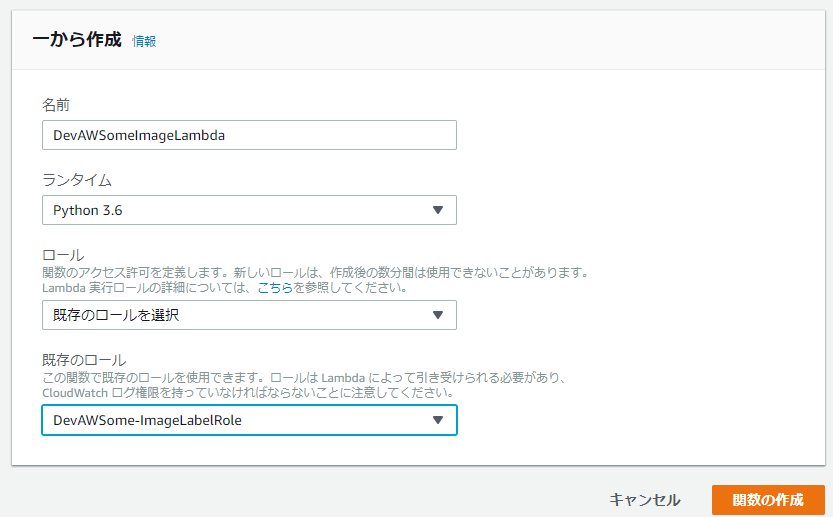
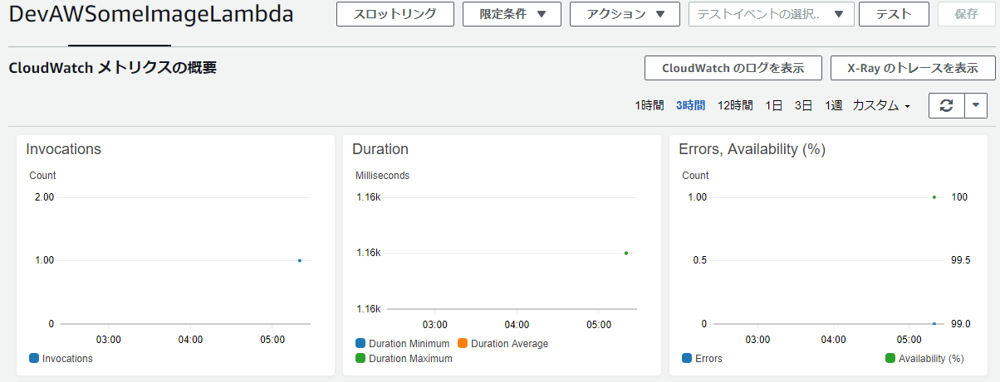
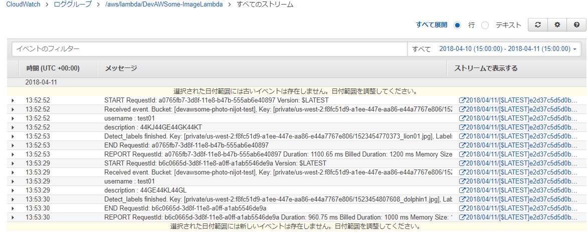

Lab05: S3 にアップロードされた画像にRekognition でラベルを付け、DynamoDBに情報を格納する
このラボでは、以下のような内容を構築します。
- S3 に画像ファイルがアップロードされたイベントを契機に、Lambda 関数を実行します
- Lambda 関数内で、Amazon Rekognition を利用して、画像に写っている内容を解析してラベルを取得します（ここでいうラベルとは、例えばcat や sea、baseball など、画像内に移っているものを認識してラベル化します）
- Rekognition から取得したラベルと、画像のオブジェクトキーやメタ情報（usernameや、description など）を合わせて、DynamoDB にデータを格納します

DynamoDB を構成する
DynamoDB は、どのような規模のデータも、スループットも満たすことができるフルマネージド型のNoSQL データベースです。またどのような規模になっても、データへのアクセスは、非常に小さいレイテンシー(10ミリ秒未満) を実現できます。
今回は、S3 に格納された画像データの Index 用途および、画像ラベルやメタデータを格納する目的で利用します。（※ ここでいうIndex とは、アップロードしたユーザの画像のみを検索したり、時系列で並び替えたりする目的で利用します。)
DynamoDB テーブルの作成
DynamoDB を利用するには、まずテーブルを作るところから開始します。 このラボでは、DynamoDB テーブルを、AWS CLI を利用して作成します。
Cloud9 画面を表示します。 画面上のメニューバーにある Window > New Terminal を選択します。
新しいターミナルが起動しますので、以下のコマンドを実行します。(コマンドをターミナルにペーストするときは、ctrl + v でできます。右クリックでのペーストはできませんのでご注意ください。)
cd ~/environment/photoapp/dynamodb/
aws dynamodb create-table --cli-input-json file://./photos-table.json --region us-west-2
正常に実行されると、以下のような内容が返ってきます。
{
"TableDescription": {
"TableArn": "arn:aws:dynamodb:us-west-2:212691234567:table/devawsome-photos",
"LocalSecondaryIndexes": [
～ 略 ～
"ItemCount": 0,
"CreationDateTime": 1523425086.359
}
}
DynamoDB テーブルを確認します。create-table コマンドは、テーブル作成が開始したらすぐに処理が戻り、テーブル作成処理は非同期で実行されています。なのでコマンドが帰ってきた瞬間はテーブルは作成中です。テーブルが作成できたかどうかは、以下のコマンドで確認できます。
aws dynamodb describe-table --table-name devawsome-photos --region us-west-2 --query 'Table.TableStatus'
作成直後は、結果は “CREATING” となります。何度かコマンドを実行して結果が、“ACTIVE” になるのを待ちます。
DynamoDB テーブルは、マネージメントコンソールでも確認できます。マネージメントコンソールで、サービス > DynamoDB を選択します。(DynamoDB はデータベースカテゴリ内にあります。)
左側のナビゲーションペインにて、テーブル をクリックします。
devawsome-photos という名前のテーブルがあることを確認します。
Cloud9 画面に戻り、DyamoDB テーブルがどのような構成で作成されたのか確認します。画面左のEnvironment から、photoapp > dynamodb まで展開し、photo-table.json をクリックして開きます。
一部抜粋して説明すると、以下の内容がテーブル名の定義およびプライマリーキーの定義になります。特に KeyType : HASH となっている username が重要で、パーティションキーとも呼ばれます。DynamoDB ではパーティションキーにより、データがパーティションごとに分散配置される仕組みになっており、パーティションが増えることで水平方向にスケールします。今回のアプリケーションはユーザごと(=username)に画像一覧データを表示しますので、パーティションキーとして、username を指定しています。
"TableName": "devawsome-photos",
"KeySchema": [
{
"KeyType": "HASH",
"AttributeName": "username"
},
{
"KeyType": "RANGE",
"AttributeName": "objectkey"
}
]
もう一つ、以下のように LocalSecondaryIndex (略してLSI) を作成しています。ソートキー(RANGE となっているキー) を指定していますが、このデータは次のラボで、画面に時系列でデータをソートして表示するのに利用します。
"LocalSecondaryIndexes": [
{
"IndexName": "username-updatetime-index",
"Projection": {
"ProjectionType": "ALL"
},
"KeySchema": [
{
"KeyType": "HASH",
"AttributeName": "username"
},
{
"KeyType": "RANGE",
"AttributeName": "updatetime"
}
]
}
]
以上で、DynamoDB テーブルの作成は完了です。今回はAWS CLI を利用してほぼ自動的に作成しましたが、マネージメントコンソールで手動で構成することも可能です。
S3 のイベントによって動作するLambda 関数を作成する
S3 に画像データがアップロードされたらそのイベントを契機に動作するLambda 関数を作成します。
Lambda 関数用のIAM ロールの作成
Lambda 関数作成前にまずやることは、IAM ロールの作成です。
今回作成するLambda は、以下の図のように、S3 、DynamoDB 、 Rekognition および、内部的に CloudWatch Logs にアクセスします。Lambda 関数はこの4つのサービスにアクセスできる権限が必要ですが、この権限はIAM ロールによって付与されます。

マネージメントコンソールで、サービス > IAM を選択します。
IAM サービス画面で、ロール を選択し、ロールの作成 ボタンをクリックします。
ロールの作成 画面で、AWS サービス を選択し（デフォルトで選択されています。）、このロールを使用するサービスを選択 で、Lambda を選択します。
画面右下の 次のステップ：タグ ボタンをクリックします。
タグの追加 (オプション) 画面では何も入力せずに、画面右下の 次のステップ：アクセス権限 ボタンをクリックします。
アクセス権限ポリシーをアタッチする 画面にて、AmazonS3ReadOnlyAccess 、AmazonDynamoDBFullAccess 、AmazonRekognitionReadOnlyAccess および AWSLambdaBasicExecutionRole の４つにチェックを入れます。（それぞれのロール名を 検索 フィールドに入力するとすぐに見つかります。）
次のステップ:確認 ボタンをクリックします。
確認 画面にて、ロール名 に、DevAWSome-ImageLabelRole と入力します。
ポリシー で AmazonS3ReadOnlyAccess 、AmazonDynamoDBFullAccess 、AmazonRekognitionReadOnlyAccess および AWSLambdaBasicExecutionRole の４つが表示されていることを確認します。(以下の画面のようになります。)

ロールの作成 ボタンをクリックします。
ロール一覧で、作成したロールが存在することを確認してください。以上でLambda 用のIAM ロールの作成は完了です。
Lambda 関数の作成
では、Lambda 関数の作成に移ります。
マネージメントコンソールで、サービス > Lambda を選択します。(Lambda はコンピューティング カテゴリにあります。)
リージョンが オレゴン になっていることを確認して、関数の作成 ボタンをクリックします。
関数の作成 画面で、一から作成 を選択し、名前 に “DevAWSomeImageLambda”、ランタイム は Python 3.6 を選択します。
ロール は、既存のロール で先ほど作成した DevAWSome-ImageLabelRole を選択します。

関数の作成 ボタンをクリックします。
DevAWSomeImageLabel 画面が表示され 「これで、 Lambda 関数「DevAWSomeImageLambda」が正常に作成されました。」 というメッセージが表示されます。以下のようなエラーが出ていても問題ありませんので無視してください。
User: arn:aws:iam::212694071082:user/DevAWSomeUser is not authorized to perform: kms:ListAliases on resource: *
DevAWSomeImageLabel 画面の真ん中ほどにスクロールすると、lambda_function.py のコードを入力するエディタが見つかります。この中で直接コードを記述することができますが、今回は Cloud9 内のターミナルから CLI にてコードのデプロイを実行します。合わせて、設定の変更(タイムアウトを20秒にする) もCLI で実行します。
マネージメントコンソールはこのままで、Cloud9 画面に移ります。
Cloud9 画面でターミナルが開いている場合は、そのターミナルを利用してください。ターミナルがない場合は、メニューバーから Window > New Terminal を選択して新しいターミナルを開いてください。
Lambda 関数にコードをデプロイしますが、コードは、photoapp > lambda > imagelabels > python の、lambda_function.py になります。lambda_function.py ファイルをクリックして開きます。
一部だけ抜粋すると、以下のように boto3 という Python用のSDK がロードされて、s3 / rekogniton / dynamodb のクライアントが利用されているのがわかります。
import boto3
s3 = boto3.client('s3')
rek = boto3.client('rekognition')
dynamodb = boto3.resource('dynamodb')
Lambda 内でAWS SDK を利用する場合は、Lambda 実行環境上にライブラリが含まれていますので追加でライブラリをデプロイする必要性はありません。 もし、3rd パーティ製のライブラリを組み込んで利用する場合は、ライブラリを含めてデプロイする必要があります。
Lambda 実行環境と利用できるライブラリは、以下のドキュメントを参考にしてください。
Lambda 実行環境と利用できるライブラリ
Note: コードエディタ内のurllib モジュールを利用している箇所でエラーが発生していますが、これは無視してかまいません。デフォルトのPython エディタのバージョンがデフォルトでPython2 になっているからです。気になる方は、Cloud9 画面の左上の AWS Cloud9 をクリックし、Preferences を選択します。Preferences 画面の左側のメニュー内にて、 Python Support を選択して、Pyhthon Version を Python3 に変更します。その後に、lambda_function.py ファイルを開きなおすとエラーは出なくなります。
Lambda 内の処理の流れは、以下のようになっています。(コードの解説は本ラボの最後に記述しています。)
- S3 からメタデータから、アップロードしたUsername とアプリケーション画面で入力したDescription の値を取得します。
- Rekognition を利用して、画像の解析をしラベルを取得します。
- DynamoDB にUsername、Description、Rekognition から取得したラベルなどを登録します。
それでは、実際にデプロイ作業を実施します。デプロイは、対象コードをzip にまとめて、aws lambda update-function-code を実行します。
ターミナル内で以下のコマンドを実行してください。(コマンドをコピーする際には、 記号も含めてコピーして、実行してください。)
cd ~/environment/photoapp/lambda/imagelabels/python/
zip ImageLabel.zip lambda_function.py
aws lambda update-function-code \
--function-name DevAWSomeImageLambda \
--zip-file fileb://ImageLabel.zip \
--region us-west-2
正常に処理が実行されると以下のようなLambda の情報が表示されます
{
"TracingConfig": {
"Mode": "PassThrough"
},
"CodeSha256": "DSR+YJAEAzDSnyeI/BTGFhzdXkoM3zAu1fhC5nqvSm0=",
～ 途中略 ～
"Handler": "lambda_function.lambda_handler",
"Runtime": "python3.6",
"Description": ""
}
次にタイムアウトの値を20秒 に変更します。以下のコマンドを実行してください。
aws lambda update-function-configuration \
--function-name DevAWSomeImageLambda \
--region us-west-2 \
--timeout 20
正常に処理が実行されると先ほどと同じようにLambda の情報が表示されます。 特にTimeout の値が 20 になっていることを確認してください。
"Timeout": 20,
マネージメントコンソールで変更が反映されているか確認してみましょう。サービス > Lambda を選択して、関数の一覧から、DevAWSomeImageLambda のリンク部分をクリックします。
画面真ん中のコード部分に先ほどのアップロードしたコードに変更されていること、画面下のほうの タイムアウト の値が 20 秒になっていることを確認してください。
以上で、Lambda 関数の作成は終了です。
S3 バケットのイベント設定でLambda をキックするように構成する
最後の設定は、S3 バケットに画像が登録されたら、そのイベント処理としてLambda を実行するようにS3 バケットの設定を追加します。
マネージメントコンソールで、サービス > S3 を選択します。
前のラボで作成した devawsome-photo-<yourname> を選択します。
プロパティ タブを選択し、プロパティを表示します。

画面下側の Events をクリックします。以下のように表示されます。

Events で、+通知の追加 をクリックします。
新しいイベント で、名前 に、“ImagePut”、イベント で、Put のみを選択、送信先 で Lambda関数 を選択して、Lambda で DevAWSomeImageLambda を選択します。以下のようになります。

保存 ボタンをクリックします。
以上で、S3 のイベント設定は終了です。
アプリケーションの動作確認
今回はアプリケーション側の変更は不要です。S3 バケットに画像をアップロードするという処理そのものには変更はないからです。
Cloud9 のアプリケーションのPreview 画面もしくは、ブラウザの別タブのアプリケーション画面を表示します。
前のラボと同じように、画像をアプリケーションからUpload してください。Uploading succeeded と表示されることを確認します。
DynamoDB の確認
Lambda 関数が正常に実行されていると、最終的にはDynamoDB テーブルにデータが格納されますので、まずはDynamoDB テーブルの確認をします。
マネージメントコンソールで、サービス > DynamoDB を選択して、左側のメニューで テーブル をクリックします。
devawsome-photos をクリックします。
右側にテーブルの詳細が表示されますので、項目 タブをクリックします。
以下のように先ほどアップロードした関する項目が追加されています。特に labels に画像の解析結果として、ラベルが付与されていることを確認してください。

次にLambda 関数の実行結果の確認で確認します。もし、DynamoDB テーブルにデータが格納されていなかった場合は、Lambda 関数の実行に失敗している可能性があります。
Lambda 関数の実行結果の確認
Lambda の実行結果は、マネージメントコンソールで確認できます。もしDynammoDB にデータが格納されていなかった場合は、Lambda の実行で問題が生じている可能性があり、ここでトラブルシュートできます。
マネージメントコンソールで、サービス > Lambda を選択します。
関数名が DevAWSome-ImageLambda のリンクをクリックします。
DevAWSome-ImageLambda 画面で、モニタリング タブをクリックします。以下のようにメトリクスが確認できます。

DynamoDB にデータが格納されていなかった場合は、以下の点を確認してください。
- Invocations が 0 のままの場合
- S3 のイベント設定を見直してください。またS3 バケットに画像が格納されたか確認してください。
- Errors が１以上になっている場合
- 次の手順の CloudWatach Logs の確認で、エラー内容を確認します。
Lambda 関数の実行時のログは、CloudWatch Logs に出力されます。画面上の CloudWatch のログを表示 をクリックしてください。
以下のような画面が表示されます。

CloudWatch Logs には、Lambda 関数の実行開始時間・終了時間、実行レポートなどが出力されます。エラーが発生した場合はエラーの内容も出力されます。また、コード内で標準出力に出力したデータも出力されます。
今回のコードは、Pyton で実装されていますが、lambda_function.py のコード内の、print() で出力されているデータがCloudWatch Logs に出力されていることが確認できます。
以上で、動作確認は終了です。
コードの解説
注 ここから先は、コードの解説をしています。ここは飛ばして次のラボに進むこともできます。
Lambda では、現在(2018/04現在)以下のような言語をサポートしています。
このラボでは、Python コードで記述したLambda 関数を作成しました。 Lambda 関数には、photoapp > lambda > python に格納されている lambda_funcion.py を登録しました。
アプリケーションが実行されると、S3 のイベント経由で、Lambda 関数が実行されました。以下のような流れです。
Application → S3 →(put event) → Lambda (python)
利用者はLambda 関数の登録をしただけで、実際のそのコードが動作するEC2 インスタンスなどのサーバを用意していません。Lambda 関数は、AWS が用意した実行環境上で自動的に実行される仕組みになっています。
コードを実行するためのサーバを用意する必要がないので、Lambda のようなサービスのことを サーバーレス と呼びます。サーバーレス という言葉は、Lambda サービスだけを指すのではなく、サーバを利用しないアーキテクチャ全般を指します。 例えば、S3 からデータを直接配信する場合、利用者はWebサーバを自前で用意する必要がありません。これも サーバーレス の一つです。全体的に自前のサーバを用意せずに構成されたアーキテクチャのことを サーバーレスアーキテクチャ と呼びます。
それでは、lambda_funcion.py の中身を少し見てみます。
まずは、Python 用のSDK である boto3 をimport しています。 boto3 そのものはLambda 実行環境上にデフォルトで含まれていますので、デプロイの中に含める必要はありません。
import boto3
s3 = boto3.client('s3')
rek = boto3.client('rekognition')
dynamodb = boto3.resource('dynamodb')
今回、各ライブラリを以下の用途で利用しています。
- s3: メタ情報を取得する
- rekognition: 画像ラベルを取得する
- dynamodb: DynamoDB テーブルに項目を登録する
このラボでは、S3 のPut イベントに紐づけてLambda を登録しました。S3 に画像ファイルがPut されると、以下の lambda_handler メソッドがコールされます。
def lambda_handler(event, context):
"Process upload event, get labels and update database"
bucket = event['Records'][0]["s3"]["bucket"]["name"]
key = event['Records'][0]["s3"]["object"]["key"]
key = key.replace("%3A", ":");
このメソッドでは、まずS3 のPutイベントから投げられたJSON 形式のイベントデータから、対象となるバケット名とオブジェクトキーを取得しています。
lambda 関数には、イベントに応じたデータが JSON形式で渡ってきます。
次に、S3 から head_object をコールしてメタデータを取得します。このアプリケーションでは、username と description を取得しています。
response = s3.head_object(Bucket=bucket, Key=key)
username = response['Metadata']['username'];
description = response['Metadata']['description']
Lambda からS3 にリクエストを投げる場合にも、アクセス権限が必要であり、処理の裏側では、リクエストへの署名処理が行われています。python の場合は、boto3 が自動的に署名処理していますが、元になる一時的な認証情報は、Lambda を設定するときに指定した、DevAWSome-ImageLabelRole が利用されています。
画像のラベル認識は、以下のような処理になります。画像データそのものを送るわけではなく、S3 上に格納された画像データの場所を伝えます。
response = rek.detect_labels(
Image={
'S3Object': {
'Bucket': bucket,
'Name': key
}
})
all_labels = [label['Name'] for label in response['Labels']]
最後に、DynamoDB への格納処理となります。DynamoDB はテーブルに格納するデータのことをItem (日本語で’項目’) と呼びます。データを登録する場合は、put_item をコールします。
table = dynamodb.Table('devawsome-photos')
response = table.put_item(
Item={
'username': username,
'objectkey': key,
'description': description,
'labels': csv_labels,
'updatetime': datetime.now().strftime('%Y%m%d%H%M%S')
}
)
以上で、このラボは終了です。